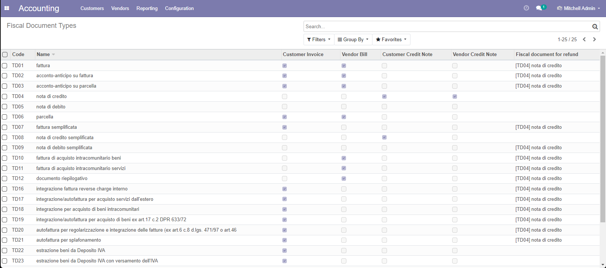

Codes & Definitions from IRS

Codici e definizioni come da Agenzia delle Entrate


This module has no specific function for End-user.
It defines the structures by Italian IRS (Tax Authority) to manage all fiscal communications. Inside there are xml schema files used by FatturaPA, EInvoice and VAT settlement.
This module requires PyXB 1.2.5 or PyXB 1.2.6
This code partially inherits some parts from l10n_it_account and l10n_it_fiscal_document_type of OCA.
Questo modulo non ha funzioni specifiche per l'utente finale. Contiene dati e definizioni come stabilito dall'Agenzia delle Entrate All'interno sono presenti gli schemi xml usati da FatturaPA, Fattura Elettronica B2B, Liquidazione IVA elettronica e Comunicazione IVA.
Tutti i soggetti passivi IVA in regime
Tutti i moduli che generano file xml dipendenti dallo schema dell'Agenzia delle Entrate devono dichiare il modulo l10n_it_ade come dipendenza.
Questo modulo eredita alcune parti di codice dai moduli l10n_it_account e l10n_it_fiscal_document_type di OCA.
| Description | Descrizione | Z0incomb | OCA | Note(s) | |
| Fiscal Invoice Type | Tipo fattura fiscale | ✅ | ✅ | Codifica tipo di fattura come da AdE | |
| N/A | Codice Carica | ✅ | ✅ | Codifica codice carica come da AdE | |
| Tax Nature | Natura fiscale dell'IVA | ✅ | ✅ | Codifica natura fiscale dell'IVA come da AdE | |
| N/A | Codici Assosoftware | ✅ | ❌ | Codifica per interscambio | |
Accounting » Configuration » Accounting » Tax Authority definition » Tax Nature
Accounting » Configuration » Accounting » Tax Authority definition » Invoice Type
Accounting » Configuration » Accounting » Tax Authority definition » Codici Carica
Contabilità » Configurazione » Contabilità » Definizioni Agenzia delle Entrate » Natura dell'IVA
Contabilità » Configurazione » Contabilità » Definizioni Agenzia delle Entrate » Tipi Fattura
Contabilità » Configurazione » Contabilità » Definizioni Agenzia delle Entrate » Codice Carica
Authors | Autori:
Contributors | Partecipanti:
Acknowledges | Riconoscimenti:
This module is maintained by the SHS_AV s.r.l..
This module is part of l10n-italy-supplemental project.
Published information on | Informazioni pubblicate: 2026-10-10